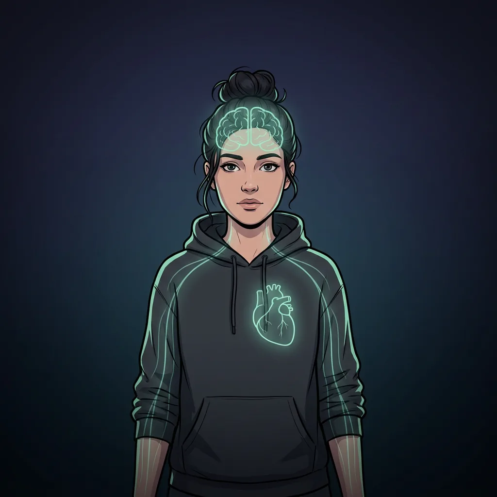
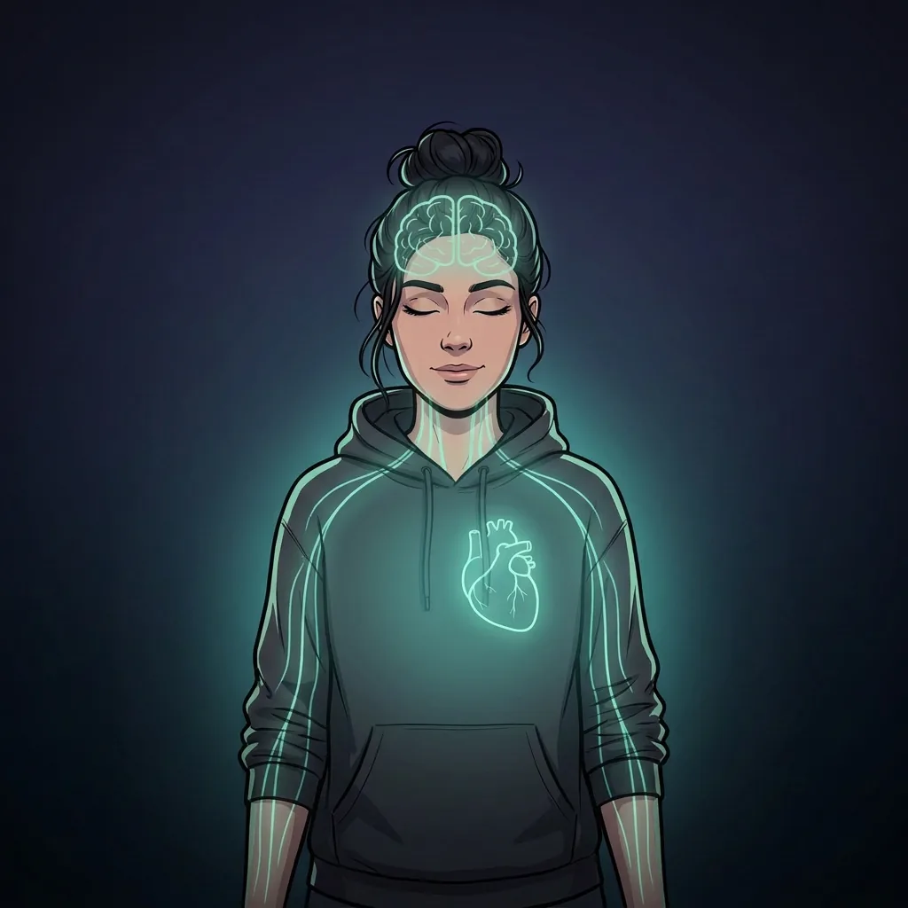

Das heißt nicht, dass du nur Negatives konsumierst. Aber wegen des Negativity Bias rutschst du leichter in diesen Kreislauf.
Dann stell dir ehrlich diese Fragen:
Wie oft hast du aufgrund einer Nachricht tatsächlich gehandelt? Deine Geldanlage geändert? Dein Land gewechselt? Jemandem konkret geholfen?
Oder hast du die News konsumiert, dich schlecht gefühlt — und dann weitergescrollt?
Sei ehrlich: Zu 99% ist es das Zweite.
Das ist so, als würdest du an einem Unfall vorbeifahren, langsamer werden, hinschauen — aber nicht anhalten und helfen. Du nimmst die negativen Bilder mit. Und dein Körper zahlt die Rechnung.
Informiert sein ist wichtig. Aber es gibt einen fundamentalen Unterschied:
Bewusstes Informieren = Du wählst gezielt, was du liest, wann du es liest, wie lange und wie häufig.
Passives Berieseln = Der Algorithmus entscheidet für dich — und dein Fokus übernimmt alles ungefiltert auf die Gästeliste.
Klarkommen – Das Update, das dir fehlt